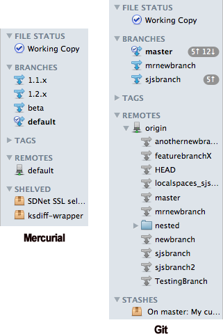
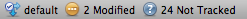

Repository Window: The Sidebar and footer
The Sidebar
The sidebar will look something like shown below, depending on whether it's a Git or Mercurial repository:

The File Status Section
Selecting the "Working Copy" item behaves the same way as if you click on the File Status button on the View control on the toolbar.
The Branches section
This displays all your branches (local branches in Git). In Mercurial, if you close a branch it will no longer appear on this list unless you re-open it. Selecting a branch will open the Log view and jump to that branch in the list. You can also right-click on the branch to get a number of context-sensitive options such as updating to/checking out the branch, merging it into your current branch, diffing that branch against your current branch, and more (on git there are also individual pull/push and tracking options). Double-clicking a branch will switch your current branch (after a confirmation dialog).
Your current branch is indicated with bold text and a 'tick badge' on the branch icon. In Git, the number of commits that your branch is ahead or behind the remote branch that it's tracking is displayed alongside the name, with an up arrow for ahead, and a down arrow for behind. In Mercurial, this is not necessary since these counts are not tracked per branch (just see the numbers on the Pull / Push toolbar icons).
Note: if you create a branch with a name which includes a '/' character, SourceTree will display the branch as nested within a folder. This can help you group branches if you wish (this is also supported on tags and remote branches in Git).
The Tags section
This section is not expanded by default but if you expand it you'll see one entry for each tag. Selecting one will jump to that tag in the Log view, and there are options available in the context menu such as updating to the tag, deleting the tag or diffing your current working copy against it.
The Remotes section
This is where you find a list of remotes configured for this repository. You can pull from or push to a specific remote from the context menu on each item.
On Git, you will also find a list of remote branches, and you can perform actions on these via the right-click context menu or double-clicking to checkout.
The Stashes / Shelved section
Whenever you use the Stash (Git) or Shelve (Mercurial) function, a new item is created in this section, each one representing a set of changes that have been stored away for future use. You can click on these items to see a diff view of the changes they represent, and right-click an item to either apply it (unshelve it) back to your working copy, or to delete it if you don't want it anymore.
The Submodules / Subrepositories section
If your project has nested repositories within it, called submodules in Git or subrepositories in Mercurial, they will appear here. See the submodules and subrepositories section for more details.
The Footer
The footer at the bottom of every repository window summarises the current state of the repository in one simple line. For example:

You'll see here the name of the current branch, followed by either a 'Clean' marker if there are no local changes, or a summary of the number of files outstanding in each state if there are local changes. You will also see information here relating to any outstanding merges and conflicts, if those apply.
See also
The Toolbar
The File Status View
The Log View
The Search View
Drafting a commit message
Repository Settings
Submodules and Subrepositories